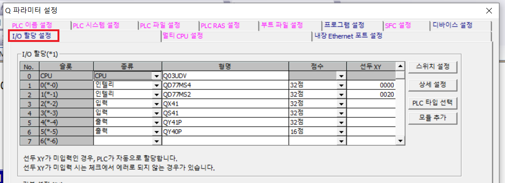
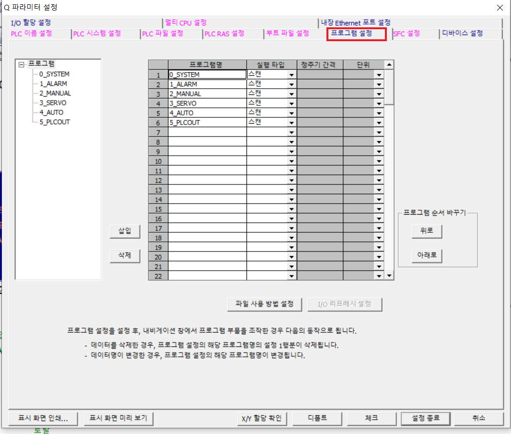
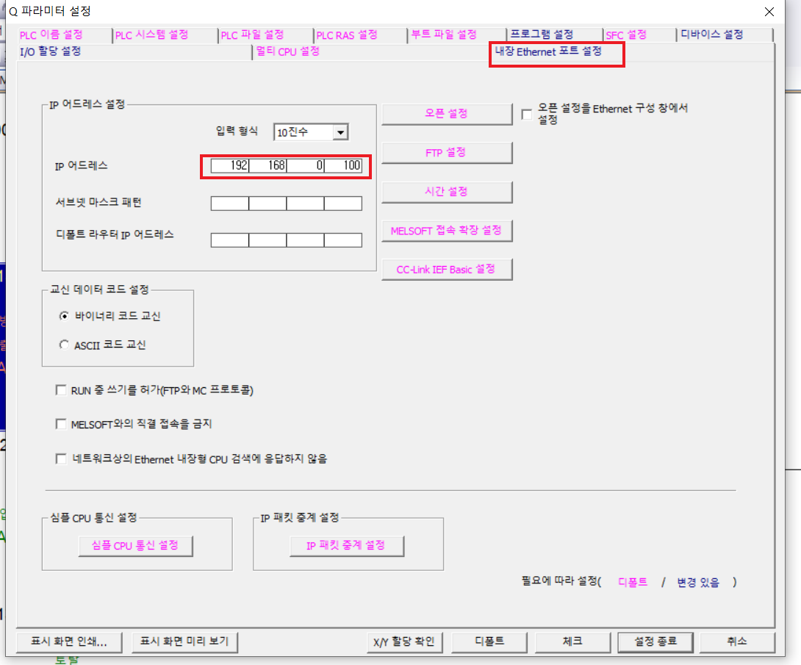
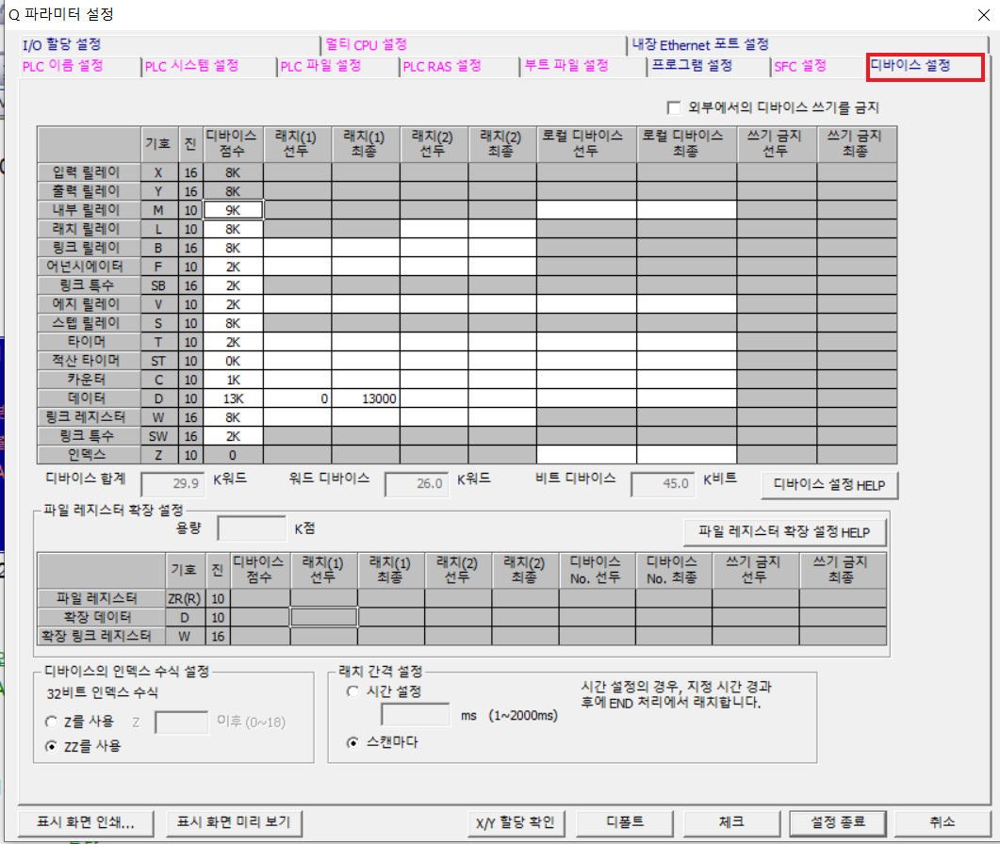

1. 1-1.I/O할당 설정 에서 설정했던 인텔리전트 기능 모듈의 선두XY에 맞게 코멘트를 작성한다.

1.각 유닛에 맞는 종류, 형명, 점수, 선두XY를 작성한다.

1. 실행 시키고 싶은 파일을 선택해서 삽입해준다.
(래더 프로그래밍을 저장해도 여기서 삽입을 해주지않으면, CPU에서 인식을 하지않는다.)

1. 터치와 연결하는 IP주소.

1.PLC가 꺼져도 내부 데이터가 사라지지않게 설정가능한 영역을 지정.
1. 1-1.I/O할당 설정 에서 설정했던 인텔리전트 기능 모듈의 선두XY에 맞게 코멘트를 작성한다.